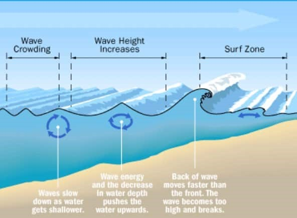
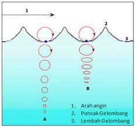
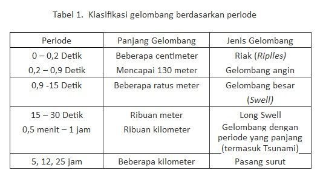
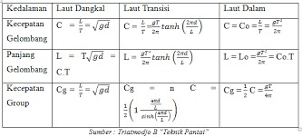

Definition
A wave is a phenomenon of rising and falling sea levels, where the energy moves from an area of wave formation towards the coast. The word "wave" is generally used for waves that are generated by the wind. Wind-generated waves are formed in deep waters and then move into shallow water where they are deformed (refraction, diffraction, reflection) and eventually break off near the shore.
Waves do not move forward, but they move in a circle, so the water only moves up and down when the waves are passing.
Phillips's Theory
Turbulence in the wind causes random fluctuations in the sea level then resulting in small waves with wavelengths of several centimeters (cm). These small waves grow larger by going through a resonance process with fluctuations in a turbulence pressure

Miles's Theory
This theory is known as the instability theory, also known as the feedback mechanism theory, which states that: When the growing size of small waves begins to interfere with the flow of air above it, the blowing wind will exert a stronger pressure as the wave size increases, causing the waves to get bigger. The energy transfer process takes place in an unstable manner, the larger the wave size, the instability causes the wave to grow exponentially.

Benefits of Waves
- Maintaining a stable temperature and climate in the world
- Through the surface of the waves, gas exchange occurs
- Increase adaptability as well as the diversity of living things
- Help the formation and maintenance of beaches
Causes and Process of Ocean Waves
- Wind
- Earthquake
- Activity of the Moon and Sun Gravity
- Depth of the seabed
Wind is a large amount of air flow caused by the rotation of the earth and caused by differences in air pressure. The wind moves from areas of high air pressure to areas of low air pressure. The movement of the wind will make the movement of sea water. The height of the waves caused by the wind depends on the speed and strength of the wind that hits the sea surface.
An earthquake is a vibration that occurs on the earth's surface as a result of the sudden release of energy from within the earth. Usually these earthquakes are caused by the movement of the earth's crust. Try to imagine or practice if you have a bowl or bucket filled with water, if the bowl or bucket is shaken then the water in the bowl will also move. Well, this is the relationship or connection between sea waves and earthquakes. The movement from within the earth can make the formation of ocean waves even more than that.
The gravity activity of the sun and the moon will produce sea waves of the tidal type.
The waves will be very visible and also felt when you are on the beach. This happens because the volume of the sea floor as well as the water surface is narrowing, so the mass of water that already has a movable force will be pushed up to the surface and will create waves.
Classification of various types of ocean waves
- Based on their nature, there are two kinds of ocean waves, namely: Constructive Waves, which are waves of small height and low speed, and when the waves break on the beach they will transport sediment (coastal material). Destructive waves are ocean waves with a great height and speed of propagation, and when these waves hit the coast there will be a large volume of water that collects and transports coastal materials to the middle of the sea.
- Based on the size and cause Capillary waves (capillary waves), these capillary waves are waves that are usually called ripples, capillary waves have a wavelength of about 1.7 meters, a period of less than 0.2 seconds and is caused by surface tension with not too strong wind. Wind waves (seas/wind waves), are waves with a wavelength of up to 130 meters, a period of 0.2-0.9 seconds, and are caused by:
- Strong winds
- Swell wave, is a wave whose wavelength can reach hundreds of meters, the period is about 0.9 – 15 seconds, and is caused by a long wind blowing.
- Tidal Wave (Tidal Wave), is a wave whose wavelength can reach several kilometers, the period is between 5 – 25 hours, and is caused by the fluctuation of the gravitational force of the sun and moon.
Classification of Waves Based on Relative Depth
- The classification based on relative depth according to Victoria (2014) is:
- If the depth value compared to the wavelength of a waters is less than 0.05, it is referred to as shallow water waves or long waves.
- If the depth value compared to the wavelength of a waters is between 0.05 to 0.5, it is called a medium-sized wave
- If the depth value compared to the wavelength of a water is greater than 0.5 then it is called a deep water wave. The classification of waves by period is:
d/L < 0,05
0,05 < d/L < 0,5
d/L > 0,5
Table Language = Indonesian
According to Triatmodjo (1999), in planning a coastal port, waves are the main factor that is taken into because it will cause the forces to act on the coastal structures. The wave calculation in planning the breakwater is as follows..
- Classification of Waves According to Relative Depth
Based on the relative depth, namely the ratio between the water depth d and the wavelength L so that it becomes (d/L), waves can be classified into three types. The classification can be seen in the table
Table Language = Indonesian
C = speed of wave
Co = speed of deep ocean waves
Lo = deep sea wavelength
g = acceleration due to gravity
t = wave period
Wave Forecast
One way to forecast waves is by processing wind data. Wave prediction is called hindcasting if it is calculated based on past meteorological conditions or meteorology in the past. Then it is called forecasting if it is based on meteorological conditions as a result of predictions. Wave forecasting is done by analyzing a wave return period. The wave return period is an average interval in one year in which the occurrence of a wave of a certain magnitude with a wave of the same value or exceeding it (Binilang, 2014). According to Hidayat (2013) forecasting from wind data is carried out to obtain information about the dominant wave conditions in the research area. The forecasting method can be done using the Severdrup-Munk-Bretcheider (SMB) method. The steps for doing the SMB wave forecasting method are as follows:
Calculating fetch length using Autocad:- Calculate the value of wind speed at a height of 10 m (U10), sea wind speed (Uw) , calculate the coefficient of friction (UA) ;
- Calculating speed duration (t) ;
- Calculating maximum fetch and minimum fetch ;
- Calculating the value of Hs and Ts-
Management of tidal wave disasters
>- Anticipating the community by providing early warning to the public from the data from weather forecasts through radio or other means of communication and delivery of information.
- For sailors, avoid areas that are experiencing bad weather or don't sail when the sea weather is extreme.
- Prepare refugee camps in case of tidal waves on the coast
- Creating a breakwater infrastructure to reduce incoming wave energy, especially in coastal areas with large waves.
- Stay calm if there is a tidal wave in the middle of the sea or on the edge
Self-rescue during a tidal wave
- If you are at the beach, immediately run to higher ground and tell people around the beach about the tidal wave.
- If you are in a ship in the middle of the sea Stay away from areas exposed to bad weather and high tides. Fishermen or people who like to travel at sea are advised to cancel sailing and traveling, if they see the characteristic conditions for the occurrence of tidal waves as described above.